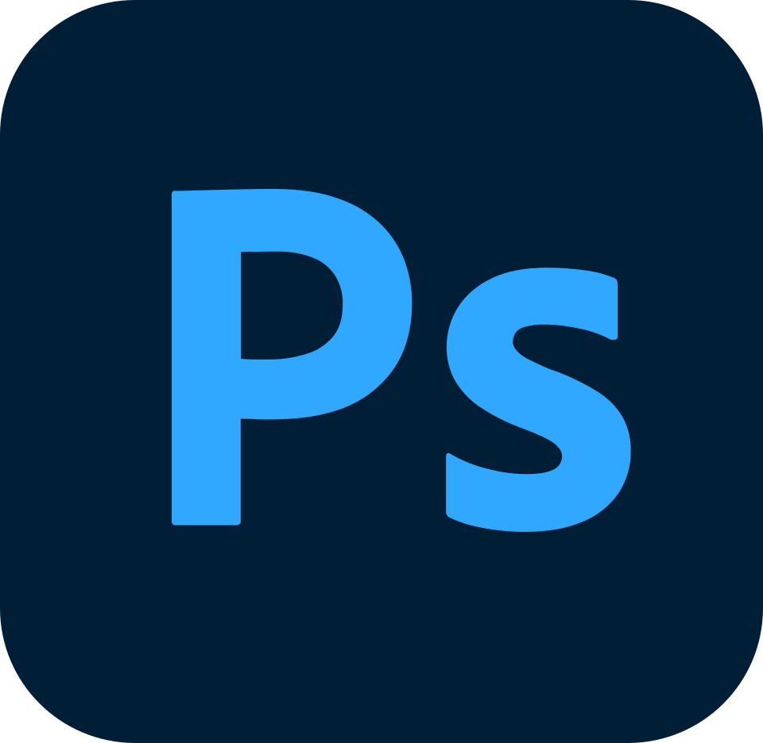
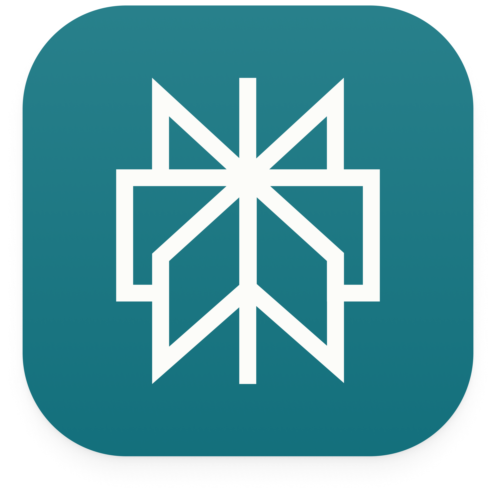
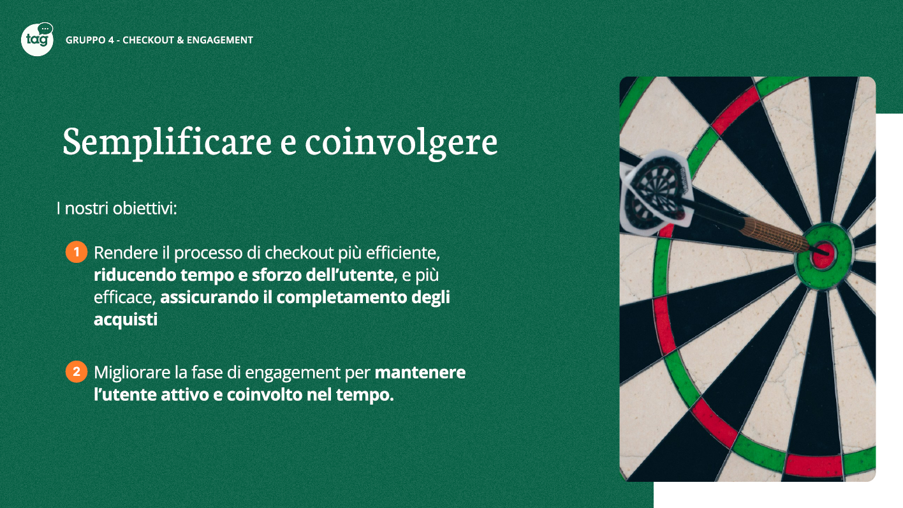
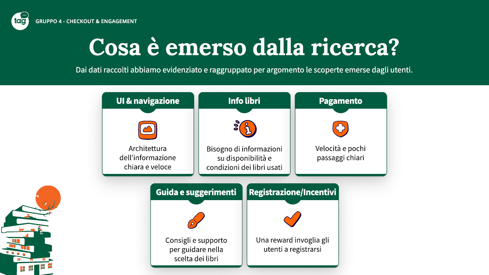
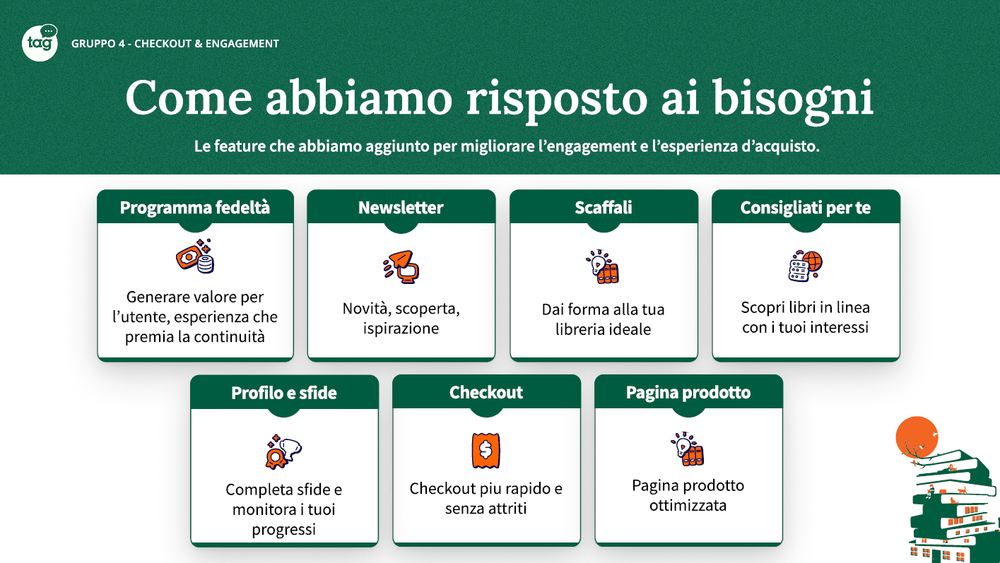

Hey, I'm
Alberto
Polimeni.
UX/UI Designer

Hey, I'm
UX/UI Designer

Sono un UI/UX Designer con un background solido e strutturato: unisco una Laurea Triennale in Design a un'esperienza biennale sul campo come Graphic Designer. Attualmente sto completando il mio percorso di specializzazione presso il Talent Garden di Milano.
Il mio obiettivo è rendere i prodotti digitali semplici da usare, intuitivi ed esteticamente straordinari. Nel mio lavoro unisco logica e creatività, velocizzando la progettazione grazie all'uso di strumenti di Intelligenza Artificiale di ultima generazione per responder in modo preciso e immediato ai bisogni reali delle persone.






02 / Portfolio
Project Work — Case Study
Ottimizzazione dell'esperienza e-commerce, flussi d'acquisto e architettura dell'informazione user-centered.
Experience & Branding
Tesi di laurea — Progettazione dell'identità visiva digitale per il festival di musica e arte.


03 / Portfolio
Social Media Design
Sviluppo di contenuti visuali e strategia di comunicazione per la presenza digital del brand.


Visual Communication
Progettazione grafica editoriale e coordinamento d'immagine coordinata per piattaforme web.


Digital Art Direction
Rinfresco d'immagine digitale per una torrefazione artigianale focalizzata sull'identità e sul territorio.


Brand Identity
Restyling visuale e design system completo per canali promozionali e d'accoglienza.


Project Work in Talent Garden with Libraccio.it
Ottimizzazione strutturale della user journey di acquisto, integrazione di dinamiche di gamification e ristrutturazione dei flussi informativi.



Graduation Project — Branding & Experience
Progettare l'immaginario del festival tra identità digitale e design di prodotto.


Social Media management & Graphic design
Dalla direzione creativa alla gestione quotidiana dei canali social: dare voce e forma all’identità di Mamas nel panorama della movida cittadina.


Social Media management & Graphic design
Comunicazione del brand focalizzata su un’estetica elegante e un’ottimizzazione strategica dei canali social per un pubblico di alta gamma.


Social Media management & Graphic design
Esaltare l'esperienza del gusto attraverso una direzione creativa audace: contenuti visivi ad alto impatto emotivo progettati per far parlare il prodotto e stimolare la voglia di assaggio.


Social Media management & Graphic design
Esaltare l'eccellenza del pescato locale attraverso un’estetica ricercata e una narrazione digitale che coniuga la freschezza del mare con la raffinatezza di un’esperienza culinaria esclusiva.